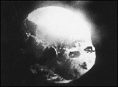

presents
Saturday
February 27th
Avanse, 4F, Saga City, Japan.
PROGRAMME A
19:00-19:50
Guest programme from Seattle-based micro cinema, INDEPENDENT EXPOSURE. (Video presentation)
Leslie Raymond RIFE WITH FIRE 8 mins, 16mm
An optically printed experimental documentary based on the pyrotechnic demonstrations of St. Paul (now of Toronto) artist Stephen Rife.
Robert Arnold MORPHOLOGY OF DESIRE 6 mins, computer
An experimental exploration of the commodified representation of gender and desire in popular culture...
Lisa DiLillo THE COCK FIGHT 3 mins, video
Calls into question the seductive powers of spectacles that glorify excessive displays of masculinity and bravado.
Lisa McElroy JOB 5 mins, 16mm
Minimalized modernity needs no face, no pulse, no senses...as it must function well.
Apichatpong Weerasethakul 0116643225059 5 mins, 16mm
There was a time when I called home less and less.
Erik Deutschman SPLIT 12 mins, 16mm
This delirious experimental narrative uses a variety of filmic techniques to create an intimate, implosive exploration of a man confronting the nature of his physical existence.
Mark Street BLUE MOVIE 5 mins, 16mm
Hand manipulated erotica.
Mark O'Connell LOVE GODDESS 3 mins, hi-8 video,
found footage, digitally manipulated
Fondle suck lick thrust etc....
PROGRAMME B
20:05-21:40

A BURNING STAR
by Onishi Kenji
95mins, 16mm, Sound (no dialogue), Colour, JAPAN
A Burning Star depicts the physicality of destruction and disappearance through images of the Japanese filmmaker's father who dies and is cremated. Maintaining a solid rhythm and perspective, this film highlights the meaning and importance of "viewing" and "filming" in documentary.(YAMAGATA INTERNATIONAL DOCUMENTARY FILM FESTIVAL, ASIAN CURRENTS PROGRAMME)
Director's Statement
I think the camera is the most important aspect of the absolute process of expression. I've interpreted Vertov's "camera eye" in a personal way adopting an Onishi style camera eye. In A BURNING STAR (SHOSEI) my inner conflicts find a cruel form. Through the camera I come to terms with my father's death. It's only natural that a person should tremble, hesitate, feel sad and be afraid. As the director, I can erase all of that. That's the unique power of the author. The camera is merely a tool to give it a form. When I turned the camera to the subject of death I felt no need to prepare humane justifications, a methodological structure nor escape routes. In A Burning Star the camera confronts the problem of death. Through the act of filming I recorded the distance between my father and myself. It is a primitive, simple and absolute film. In short, it is the possibility of my own self.
ONISHI KENJI was born in 1973. Began making 8mm films in 1990 and has made over 100 films including short works. Recently has focused on longer 16mm films such as SQUAREWORLD (SUKUEAWAARUDO, 1995) and continues to direct problematic and radical films like AQUARIUM CITY (SUISO TOSHI 1996) and ZETCHO (1997) that have attracted international attention. Onishiâs films have been highly praised in Japan and have been invited to various festivals in Japan and the USA. As well as make films, Onishi operates CINEMA TRAIN, a Tokyo venue for screening and distributing experimental film.
A BURNING STAR is a feature length documentary depicting the filmmaker's father's death and his coming to terms with that death. In his chracteristic manner, Onishi pursues the subject to the very end, with little regard for existing social conventions. In that it breaks social 'rules', it is a very personal documentary, and indeed difficult. Onishi's relationship with the dead body is always very intimate (at one point, without any hesitation on screen, he undresses the body and plays with his father's genitals) and this forces us to question our own socially constructed conceptions of death and the 'appropriate' actions to perform after the loss of someone.
Coping with death is one of the most ritually elaborate, socially inscribed and culturally specific processes we can experience, yet when alone with his father, Onishi rarely shows any concern for maintaining the Îrulesâ which we live by. One might say that he is disrespectful, that he is exploiting his father's body and humiliating not only his father but also the relatives that continue to organise the cremation in the socially inscribed manner. Yet, he does demonstrate an enormous amount of tenderness towards the body and the pace of the film could be understood as respectfully quiet and patient. When I first watched the film, Onishi showed me a shortened preview version that cut out the long periods of preparation for the cremation and instead concentrated on the burning of the body. The longer version, in my opinion, does Onishi much more justice in developing the relationship with his father.
The second half of the full length version being screened at EIGA ARTS, shows the body being burnt as the camera (double Super 8 later transferred to 16mm) sits infront of the open door to the fire and records the body melting, the bones crumbling and turning to ashes. It initially seems rather macabre yet over the course of perhaps 30mins or so of watching the body in what is one long continuous shot except for film changes, I found myself feeling closer to anything I can recall seeing on screen up until now. I felt this way, not only in a physical sense (and to see a body decay real-time makes one very aware of one's own physicality in relation to the physical body represented on screen), but emotionally/intellectually too, I found myself 'participating' in the funeral of a man I had not known. My notion of it being macabre dissapeared and instead, I found myself understanding this act of filming as perhaps the greatest display of affection and respect possible for Onishi. It was a painfully long goodbye and more personal and seemingly more meaningful than any preordained ritual could have offered.
My only quibble over the film would be that by breaking the social conventions and personalising the image of his father to such a degree, Onishi perhaps paid disrespect to the relatives who were also mourning in the more traditional way. One has to understand and accept that a funeral is, like most rituals, primarily a social event, and one which requires that everybody understand their roles. In the film at least, Onishi seems to disregard these roles and thus the 'mechanics' of the ritual itself. One wonders what it must have been like to be one of the many relatives who had to to watch Onishi wander around with a camera infront of his face, as preparations were being made. However, they seem to show little concern over him filming and I can only assume that they accepted it.
Onishi has said that the camera is "the most important aspect of the absolute process of expression". In A BURNING STAR, this is very apparent, for when one expects him to stop filming and express himself in the manner that other people are doing, he continues to film in what seems initially, a cruel and thoughtless manner. Only after some time (for me it was during the burning of the body), do we realise that Onishi _is_ expressing the grief, loss, respect and confusion that one would expect, only that it is not being represented in front of us on screen (Onishi certainly doesn't shed tears infront of the camera) but rather we are being forced to experience his loss as our own also, with Onishi, through his 'camera eye'. (The reference to Vertov is Onishi's own).
DOORS OPEN AT 18:30 and 19:50 Come for one or both programmes.
Entrance is free but donations are encouraged and always appreciated. January's programme broke even! Thanks everyone and special thanks to Angela and SAGA AGA.

{kind=link}